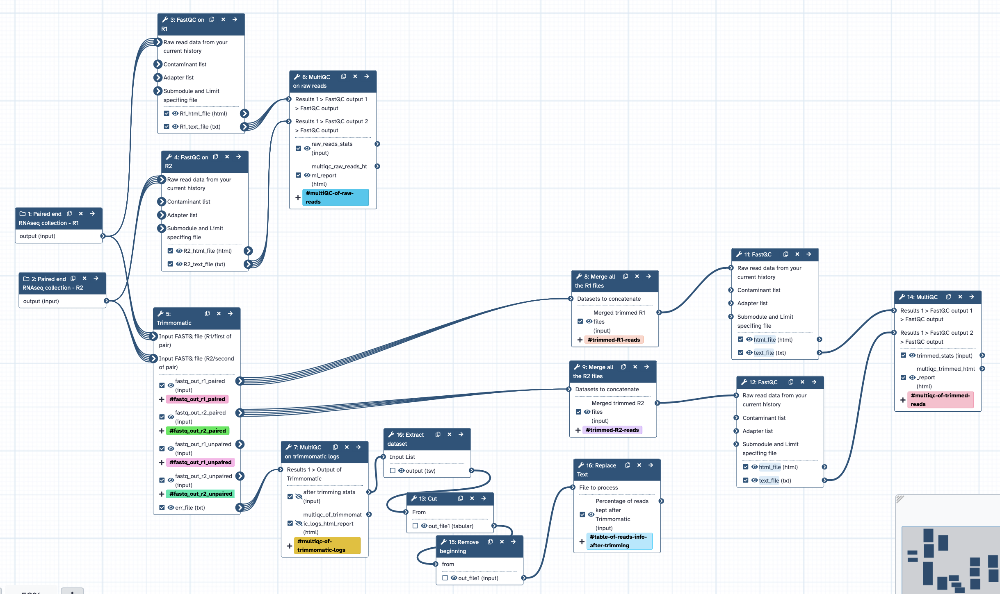

This is part of a series of workflows to annotate a genome, tagged with `TSI-annotation`. These workflows are based on command-line code by Luke Silver, converted into Galaxy Australia workflows. The workflows can be run in this order: * Repeat masking * RNAseq QC and read trimming * Find transcripts * Combine transcripts * Extract transcripts * Convert formats * Fgenesh annotation **** About this workflow: * Repeat this workflow separately for datasets from different tissues. * Inputs = collections of R1 files, and R2 files (all from a single tissue type). * Runs FastQC with default settings, separately for raw reads R1 and R2 collections; all output to MultiQC. * Runs Trimmomatic with initial ILLUMINACLIP step (using standard adapter sequence for TruSeq3 paired-ended), uses settings SLIDINGWINDOW:4:5 LEADING:5 TRAILING:5 MINLEN:25, retain paired (not unpaired) outputs. User can modify at runtime. * Runs FastQC with default settings, separately for trimmed R1 and R2 collections; all output to MultiQC. * From Trimmomatic output: concatenate all R1 reads; concatenate all R2 reads. * Outputs = trimmed merged R1 file, trimmed merged R2 file. * Log files from Trimmomatic to MultiQC, to summarise trimming results. * Note: a known bug with MultiQC html output is that plot is labelled as "R1" reads, when it actually contains information from both R1 and R2 read sets - this is under investigation (and is due to a Trimmomatic output file labelling issue). * MultiQC results table formatted to show % of reads retained after trimming, table included in workflow report. * Note: a known bug is that sometimes the workflow report text resets to default text. To restore, look for an earlier workflow version with correct workflow report text, and copy and paste report text into current version.
{kind=link}